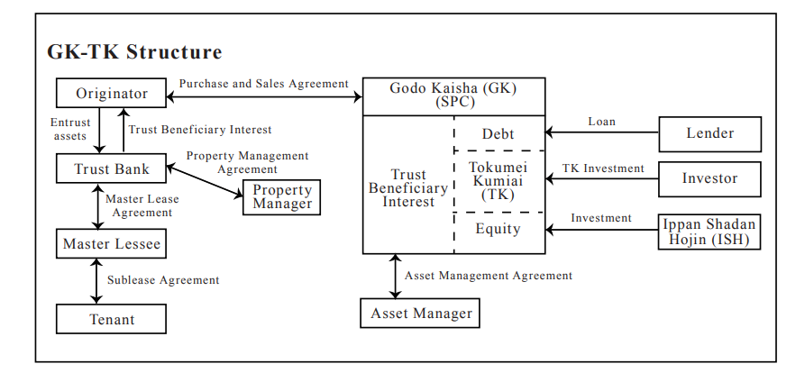

Academic | What is a GK-TK Structure?
An overview of the GK-TK (Godo Kaisha - Tokumei Kumiai) structure, a prominent real estate securitization scheme in Japan, highlighting its mechanisms for bankruptcy remoteness and passive investment structuring.
GK-TK Structure is related to investment in real estate (or in other portfolios). Direct investment in real estate may require a very large amount of capital, and various procedures must also be undertaken. On the other hand, when high-value real estate is placed into an SPC, and the SPC sells securities backed by such real estate, individual and corporate investors can invest in a portion of the real estate within the scope of their investment capacity.
Such a structure is called a real estate liquidation / securitization (“Securitization”) scheme. Securitization schemes are broadly divided into two types: public offerings and private placements. Among private placements, there are the GK-TK structure and the TMK structure. This time, I will only briefly answer what the GK-TK structure is in Japan step by step.
The structure of GK-TK

(*The picture is created by Chatgpt)
Here, GK is an abbreviation for Godo Kaisha (a type of company with limited liability), which functions as the SPC. TK is an abbreviation for Tokumei Kumiai (silent partnership), which is a group of investors.
First, why is an SPC necessary? One important point in securitization schemes is to achieve bankruptcy remoteness. If the SPC were to go bankrupt, investors would not be able to recover their invested funds, and naturally would not invest. Even if they did invest, when valuing such asset (i.e., when calculating free cash flow), the discount rate would incorporate such bankruptcy risk, resulting in a significantly higher discount rate, a lower calculated asset value, and a price that may reduce the seller’s incentive to proceed.
Therefore, bankruptcy remoteness must be firmly established. As for how a GK achieves bankruptcy remoteness, generally, an incorporated association (called "ippan shadan hojin" in Japan) is made the owner (shareholder and manager) of the GK. In an ordinary stock company, ownership and management must be separated. In a GK, ownership and management may coincide, so a GK is utilized here. The general incorporated association acting as the owner is a non-distribution entity (i.e., it does not distribute profits to its members), thereby contributing to the stability of the GK’s operations. In addition, bankruptcy remoteness is typically supported by a combination of organizational, contractual, and structural measures. However, the actual operation of the underlying real estate is entrusted to a property management (PM) company, and asset management such as rent fees management is delegated to an asset management (AM) fund.
Regarding TK, why invest through a silent partnership? This is because one of the strengths of Securitization products is the possibility of achieving pass-through-type tax treatment under certain conditions. If a corporation is an investor, when it receives profits, it is generally taxed at the corporate level (as corporate income). When the after-tax profit is distributed as dividends to its members (individuals), it may be further taxed at the individual level, resulting in economic double taxation. By contrast, in a TK structure, subject to applicable tax rules and structuring, taxation may be aligned more closely with investors, which may provide certain tax efficiencies. Of course, when an individual investor invests directly, only individual-level taxation applies.
The composition of TK members means forming an investment group consisting of individuals and individuals, individuals and corporations, or corporations and corporations. However, since this TK group does not have legal personality, as explained above, taxation is generally not imposed at the entity level, and distributions from the GK are taxed at the member level in accordance with applicable tax rules.
Another advantage of TK is that investment members invest within the scope of their investment and bear liability only up to the amount of their investment, and do not bear liability beyond such investment for damages to third parties arising from the actions of the GK as operator, under the relevant provisions of the Commercial Code governing Tokumei Kumiai. However, caution is required here: if the investment agreement between TK and GK is not properly designed, and if the involvement of TK members in the GK exceeds a certain threshold, such TK arrangement may be characterized as a partnership (nin’i kumiai), and there is a risk that any member of such group may bear direct liability to third parties for actions related to the business beyond its investment amount. In addition, where foreign investors are involved, such characterization (regarded as partnership in lieu of TK) may trigger permanent establishment (PE) risk depending on the level of involvement and applicable tax treaties, potentially increasing the overall tax burden.
Another point to note is that if the TK structure is classified as a “non-corporate association” under tax law of Japan, the TK itself may become a taxpayer, and the benefit of pass-through-type taxation may be lost. Therefore, careful structuring of the TK is essential.
Finally, regarding the asset composition of the GK, instead of directly owning real estate, it is common for the ownership of the real estate to be entrusted to a trust bank, with the GK holding the beneficial interest in the trust backed by such real estate. One reason for this approach is that, depending on the structure, direct ownership of real estate by the GK may fall within the scope of the Real Estate Specified Joint Enterprise Act in Japan, for which obtaining the necessary license can be challenging. By holding trust beneficial interests, such regulatory requirements may be sucessfully avoided in general cases. Although trust fees are required when engaging a trust bank, certain taxes such as registration and license tax, real estate acquisition tax, and stamp duty related to trust beneficial interests may be lower compared to direct acquisition and holding of real estate, and therefore this structure is often used taking into account both regulatory and tax considerations.